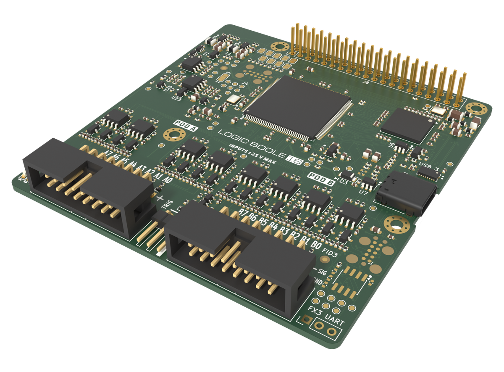

Open hardware · open software
Board revision C
Logic Boole 16
A 16-channel logic analyzer on USB 3, for a computer or a Raspberry Pi.
200
MS/s
on 16 channels
0.3–3
V
a threshold for each pod
USB-C
one cable, power and data
